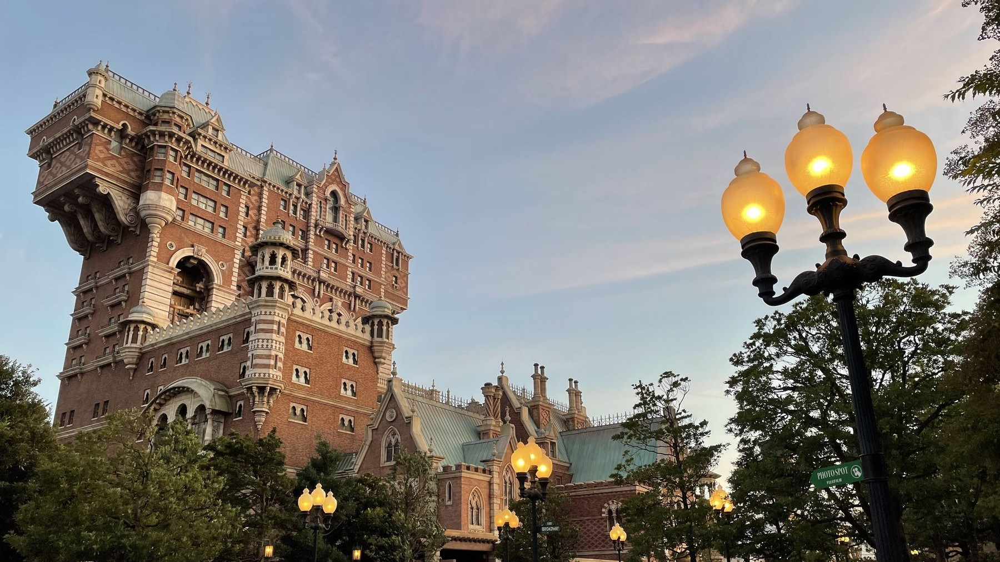

Hotel Hightower
傲慢なる略奪の果てと、影の忠臣
I. 1899年の失踪劇
1912年のアメリカ・ニューヨーク。人々が「恐怖のホテル（タワー・オブ・テラー）」と呼んで畏れる壮麗な廃墟「ホテル・ハイタワー」。現在この建物では、ニューヨーク市保存協会による見学ツアーが催されており、一般に公開されています。しかしその静寂の裏には、1899年12月31日の大晦日に起きたオーナー失踪事件が眠っています。
創設者のハリソン・ハイタワー三世は、富と名声を誇る一方で、あくなき収集欲に取りつかれた人物でした。彼は世界中を巡って美術品や文化遺産を、ときには力ずくで持ち帰り、それを誇示するためにこの巨大なホテルを築き上げたのです。その自己顕示欲は、世界各地の建築様式が重なる、美しくも奇怪な外観にも表れています。
正面の低い建物は、もとは父が建てた邸宅でした。三世が暮らした邸宅は、増築を経てホテルの玄関とロビーへと姿を変えました。塔の上部にある二つの張り出しも、完成間近になって主人が自室を広げたがったために生まれたものです。片側を張り出させ、その釣り合いを取るため、反対側にも張り出しを加える。街を見下ろす塔の輪郭にまで、主人の望みが刻まれています。
| Year | Event |
|---|---|
| 1835年 | ハリソン・ハイタワー三世、ニューヨークに誕生。 |
| 1892年 | 自らの富の象徴である「ホテル・ハイタワー」を開業。 |
| 1899年 | コンゴ川流域のムトゥンドゥ族から「シリキ・ウトゥンドゥ」を強奪。 |
| 1899年12月31日 | 昼の記者会見、夜の祝宴を経て、真夜中のエレベーター落下とともに謎の失踪。 |
| 1912年 | ニューヨーク市保存協会により、ホテル内の見学ツアーが始まる。 |
強奪された守り神と、追ってこなかった村人たち
失踪事件の発端となったコンゴ川流域への遠征。1899年当時、「シリキ・ウトゥンドゥ」は、周囲の村々から恐れられていたムトゥンドゥ族によって、集落の守り神として祀られていました。
7月16日、追っ手から逃れるハイタワーの一行は、二つの緑の目が描かれた木のある支流へ入ります。追跡していた者たちは、その先へ進もうとしませんでした。危機を脱した一行は、意外にもムトゥンドゥ族の友好的な歓迎を受け、宴へ招かれます。ただし、村では葉巻の火を消すよう求められました。
祀られていたシリキ・ウトゥンドゥを一目で気に入ったハイタワー三世は、買い取りを持ちかけますが、交渉は決裂します。業を煮やした彼は部下に武器を取らせ、祭壇から力ずくで偶像を奪いました。偶像に付いた錆びた金属片が彼の手を切ると、族長キジャンジは、その血を見て微笑んだように見えました。
武装した村人たちを前に、執事アーチボルト・スメルディングは激しい戦いを覚悟していました。しかし、一行が川を下って逃げる間、村から聞こえてきたのは笑い声と歌声。追っ手は一人としてやってきませんでした。守り神を奪われたはずの人々が、なぜそれを取り戻そうとしないのか。その不気味な疑問を抱えたまま、一行は偶像をカヌーの舳先に据え、旅を続けます。
行く先々の村で彼らは歓迎されました。かつて敵対していた者まで武器を捨て、求められた品を差し出します。ハイタワーにとっては、偶像がもたらした幸運。しかし、スメルディングには、迎える人々の目の奥に恐怖の色が見えました。
II. 呪いの偶像「シリキ・ウトゥンドゥ」と8つの掟
この悲劇を読み解く最大の鍵が、ムトゥンドゥ族が崇拝していた精霊の偶像「シリキ・ウトゥンドゥ」です。木彫りの体には釘や金属片が打ち込まれ、その名は「災いを信じよ」を意味します。手にした者には、守らなければならない八つの掟がありました。
シリキ・ウトゥンドゥ：8つの掟
1. 崇拝すること。
2. 燃やさないこと。
3. 閉じ込めないこと。
4. おろそかにしないこと。
5. 嘲笑しないこと。
6. 人に譲らないこと。
7. 放置しないこと。
8. 恐れること。
ハイタワー三世は、偶像を木箱に閉じ込め、公の記者会見で呪いを嘲笑し、最後には葉巻の火をその頭に押し付けました。村で消すよう求められた火を、帰国後は偶像そのものに向けたのです。しかし、不吉な出来事は、ニューヨークへ戻るよりも前から始まっていました。
盲目の老人の警告と、緑色の雷撃
8月12日、スメルディングは盲目の老人から、幸運のあとに災いを招く偶像の話を聞きます。敬わなければならず、捨てることも、人に譲ることも許されない。あの村人たちは、自分たちに盗ませようとしたのではないか。執事は、追っ手が来なかったのはそのためだと考えました。
老人は、偶像に呪術師の霊が宿り、遺骨の一部も隠されているという噂を語りました。そして、偶像の目に気をつけるよう告げます。ところが、目は閉じたまま。翌日、スメルディングがその話を伝えると、主人は一笑に付し、偶像を罵倒しました。その直後、緑色がかった稲妻が一艘のカヌーを襲います。スメルディングは偶像の世話を引き受けました。
木箱を開けた執事
帰りの船でも、主人は忠告を聞かずに偶像を木箱へ詰め込みます。出航以来の嵐が収まったのは、スメルディングが命令に背き、箱から偶像を出したあとでした。執事は、主人がニューヨークの素晴らしい場所に偶像を飾ろうとしていることを、スワヒリ語で懸命に伝えます。
主人が信じなかった呪いを恐れ、その主人を守るために命令を破る執事。偶像を持ち帰ったのはハイタワーでしたが、海を渡る間、その怒りを鎮めようとしていたのはスメルディングでした。二人は同じ船でニューヨークへ向かいながら、持ち帰る品をまったく違う目で見ていたのです。
13年間、閉ざされていたホテル
1899年の失踪から、見学ツアーが始まる1912年まで、13年。姿を消した主人の肖像がロビーに残り、コレクションの木箱は開封されないまま積まれています。再び扉が開いても、あの夜の行方不明者が帰ってきたわけではありません。
III. S.E.A.と執事スメルディングの謎
ホテル・ハイタワーの物語は、一つの失踪事件にとどまりません。ハイタワー三世は、世界各地を旅する探検家・冒険家学会「S.E.A.（Society of Explorers and Adventurers）」の一員でした。ヘンリー・ミスティック卿の邸宅に飾られた1899年の集合肖像には、学会の面々とともに、シリキ・ウトゥンドゥを手にしたハイタワーの姿も残されています。
失踪したハイタワー三世には、娘のヘイゼル・ルイーズ・ハイタワーがいます。1881年4月1日にエジプトで生まれた彼女は、父が消えたとき、ロンドンで大学に入る直前でした。父の行いのすべてには賛同できなくても、好奇心を追い、冒険することの価値を教えてくれた父を愛していました。
ところが、父と同じ学会に入ろうとしたヘイゼルは、ハイタワーの名を理由に拒まれます。彼女が選んだのは、父が持ち去った宝石を元の町へ返すことでした。自ら作った装置「タイムスキッパー」で時を越え、レインボーリッジの宝石を人々のもとへ戻す。父から受け継いだ冒険心を、父の過ちを正すために使ったのです。それでも、父がどこへ消えたのか、娘にも分かりません。
大晦日の記者会見と、一笑された「呪い」
そして迎えた1899年12月31日の大晦日。ハイタワー三世は自身のホテルにて、コンゴ遠征の帰還と偶像のお披露目を兼ねた盛大なニューイヤーパーティーを開きます。その日の正午には、豪華な書斎で記者会見が行われました。
「ニューヨーク・グローブ通信」の記者マンフレッド・ストラングは、偶像の呪いを問いただします。しかしハイタワーは意に介さず、質問を重ねる記者を退場させました。彼が語りたかったのは、危険を乗り越えた自分の冒険と、持ち帰ったコレクションの素晴らしさです。その最後の会見は、今も書斎の蓄音機に残っています。
会見から追い出されても、ストラングは引き下がりません。午後4時にはウェイターに変装してホテルへ戻り、夜の祝宴へ潜り込みました。午後7時に始まったパーティーでは、食事とともに、遠征の様子を映す幻灯が披露されます。客の中には、のちにこの建物を守るベアトリスもいました。彼女と言葉を交わしたウェイターの正体も、ストラングだったのです。
執事スメルディングの「異常な忠誠心」
約30年にわたってハイタワーに仕え、膨大なコレクションの管理を任されていたアーチボルト・スメルディング。主人にとっては、執事であると同時に、ただ一人の友人でもありました。世界を巡る旅には常に付き添い、主人が偶像を嘲ると、偶像の怒りを鎮める役に回ります。
しかし、主人とは対照的に、その素性はあまり知られていません。ストラングが行き当たったのは、1867年から1868年のアビシニア遠征で脱走した、同名の兵士の記録でした。あの執事と同じ人物なのでしょうか。主人の略奪を助け、危険からも守ろうとした男。その過去は、同じ名前の兵士がいたというだけでは明らかになりません。
失踪直前：エレベーター内での最後の傲慢
午後11時45分、ハイタワー三世は偶像を最上階の自室に飾るため、エレベーターへ乗り込みます。昼の会見を開いた地上の書斎とは別の、塔の上の私室です。スメルディングは敬意を払うよう忠告しました。しかし主人はそれを退け、吸っていた葉巻の火をシリキ・ウトゥンドゥの頭に押し付けました。
そして深夜0時。ホテルの灯りが消え、緑色の光がエレベーターを包みます。ハイタワー三世の絶叫。落下するかご。塔の窓は砕け、祝宴は混乱に変わりました。あれほど大きな声で冒険を語っていた主人は、忽然と姿を消したのです。
壊れたエレベーターに残っていたのは、フェズ帽とシリキ・ウトゥンドゥ。主人の遺体は見つかりませんでした。偶像の名を叫ぶ主人の声を聞いたストラングは、彼がかごの中から消えたと信じています。しかし、閉ざされたかごから人がどう消えたのかは、誰にも説明できません。ホテルは閉鎖され、ニューヨークの人々は、この塔を「恐怖のホテル」と呼ぶようになりました。
IV. S.S.コロンビア号と、ホテルを守った娘
ホテルの近く、アメリカンウォーターフロントの港に堂々と停泊する巨大客船「S.S.コロンビア号」。この船を所有するU.S.スチームシップカンパニーのオーナー、コーネリアス・エンディコット三世は、ハイタワー三世とニューヨークの富を二分した実業家です。
二人の確執は、事業で競い合うようになるよりも前、英国の寄宿学校時代にまでさかのぼります。スノッディングトン校でハイタワーの悪ふざけに苦しんだエンディコットは、成人してからも宿敵を追い続けました。ホテルの開業祝賀会にも、彼だけは招かれません。街を代表する富豪になっても、少年時代の因縁は消えていなかったのです。
エンディコットが握っていたのは、港の船だけではありません。ストラングの勤めるニューヨーク・グローブ通信も、彼の所有でした。新聞はハイタワーの商売の汚い手口を追及し、ストラングも本人に食い下がります。ホテルから少し歩いたブロードウェイ・ミュージックシアターの左隣には、今もその新聞社のオフィスがあります。
憧れの冒険家と、盗まれた宝
ハイタワー三世の失踪後、エンディコットはホテルの土地を手に入れ、建物を解体して自分のホテルを建てようとします。しかし、その計画を阻んだのは、実の娘ベアトリス・ローズ・エンディコットでした。ハイタワーの冒険に憧れていた彼女は、1912年にニューヨーク市保存協会を立ち上げ、ホテルの保存と修復に情熱を注ぎます。
彼女が14歳のとき、冒険物語に心を奪われるきっかけを作ったのは、実はストラングでした。父を訪ねてきた若い彼が、ハイタワーの冒険を描いた雑誌を落としていったのです。不正を暴こうと持ち込んだ読み物が、かえってベアトリスを、ハイタワーの冒険物語の熱心な読者にしていたのです。
ただし、ベアトリスも、憧れだけでハイタワーを見てはいられなくなります。8月20日、ストラングと調査ノートを照合すると、世界各地の博物館や収集家のもとから消えた品の一部が、ホテルの倉庫にあるものと一致します。冒険家への評価は下がりました。それでも、主人の行いと建物の価値は別だと考え、ホテルを残すという決意は変えませんでした。
アーチーの正体と、夜のホテル調査
保存運動には、もう一人、忘れてはならない人物がいます。ベアトリスが1908年に公園で出会った、やせた老人アーチー。かつてホテルでコックの助手をしていたと名乗り、ホテルのことを驚くほど詳しく知っていました。父にホテルの買収を勧めるよう提案したのも、アーチーでした。ただし、その名を父に明かさないよう、ベアトリスに頼んでいたのです。
8月22日、ベアトリスとストラングは、閉鎖中のホテルを調べるために足を踏み入れます。ロビーの影、書斎で鳴る電話。怪しい気配を追う記者に対し、ベアトリスは呪いを認めようとしません。倉庫の収集品に目を輝かせる彼を見て、彼女はむしろ、市民にも見せる価値があると確信していきました。
さらに奥で見つかったのは、新聞の切り抜きや日記が残るスメルディングの部屋でした。アーチーと、あの執事は同じ人物。ハイタワーに仕えた男は、主人とともに消えたのではなく、ベアトリスに近づき、ホテルを残すために動いていたのです。
謎の電話やロビーの影も、スメルディングの仕業ではないか。ストラングはそう考えます。しかし、正体が分かっても、狙いまでは分かりません。なぜ、主人が消えたホテルへ、再び人々を迎え入れようとするのでしょうか。
最上階で異変に遭っても、ベアトリスはホテルの公開をあきらめませんでした。呪いの危険を訴えるストラングと、市民へ招待状を送ろうとする彼女。二人の見方が一致しないまま、見学ツアーの準備は進みます。私たちをホテルへ招いたのは保存協会ですが、その始まりには、姿を変えた執事の働きかけがありました。
ロストリバーデルタ「レイジングスピリッツ」の物証
ハイタワーの旅の痕跡は、遠く中央アメリカのロストリバーデルタにも残っています。「レイジングスピリッツ」付近に置かれた、ホテル・ハイタワー宛ての荷物。ロビーの壁画には、その土地を旅する主人の姿が描かれています。荷物の行き先と壁画の風景を重ねると、発掘現場とニューヨークのホテルがつながります。
港に着いた大きな収集品は、地下通路を通るトロッコでホテルへ運ばれ、巻き上げ機と鎖で倉庫へ引き上げられていました。床の鉄製の跳ね上げ戸は、その搬入口です。今は通路が浸水しており、全体の構造は分かっていません。館内に積まれた未開封の木箱も、主人が集めたコレクションの膨大さを物語っています。
日本で鎧と刀を盗み、人力車で逃げる姿。インド象に乗り、大きな彫像を運ぶ姿。ロビーに描かれた冒険は、倉庫の品ともつながっています。インドの絵で運ばれていた彫像は、倉庫の天井から吊り下げられています。倉庫入口近くの撮影室には、シリキ・ウトゥンドゥの写真も。失踪当日の朝、主人が撮影させた偶像は、今も館内で見学者を待っています。
公園のベンチから、最上階へ
1899年に落下したメインエレベーターと、見学者を乗せるエレベーターは別のものです。保存協会が使うのは、秘密の倉庫の隠し扉に通じる業務用エレベーター。絵画や鎧などを分けて収めた六つのコレクションルームの先で、見学者はそのかごへ乗り込みます。
座席も、保存協会が見学者のために取り付けました。使われたのは、公園のベンチです。世界中の宝を集めた富豪のホテルに、人々がくつろげるよう持ち込まれた身近な家具。その座席に腰を下ろした私たちは、13年前に主人が消えた最上階へと向かいます。
V. 独自の神話学（アメリカ版との差異）
イマジニアたちが築いた、もう一つのホテル
同じ「タワー・オブ・テラー」の名を持っていても、東京とアメリカでは、エレベーターに乗り込むまでにたどる物語が異なります。フロリダのハリウッド・タワー・ホテルの物語は、テレビ番組『トワイライト・ゾーン』の世界につながっています。1939年のハロウィーンの夜、嵐に襲われたホテルのエレベーターから客たちが消え、その後、建物は閉ざされました。
東京でイマジニアたちが形にしたのは、1899年のニューヨークで失踪した一人の収集家と、1912年にそのホテルを残そうとする人々の歴史です。2006年9月4日に開業したアトラクションへの投資額は約210億円。その物語は塔の中にとどまらず、港の船会社や新聞社、遠い発掘現場にまでつながっています。
ホテルを守ろうとする娘、呪いを追う記者、姿を変えて働きかける執事。彼らの思惑が重なることで、私たちがこの建物へ入れる理由も生まれました。主人の冒険を誇らしげに描いた壁画や、品を運び込んだ地下通路の先に、保存協会が用意した座席が待っています。
書斎の蓄音機が途切れ、暗闇にハイタワーの声が響くとき、偶像を嘲っていた主人は、先へ進むなと警告します。世界中の宝を集めても、あの夜から逃れられなかった男。その声を聞きながら、私たちは、彼が目指していた最上階へ上っていくのです。
参考資料（17件）
- 東京ディズニーリゾート・ブログ「恐怖のホテル『タワー・オブ・テラー』は明日で15周年！」（2021年9月3日、父の邸宅・記者会見・撮影室・見学用座席）
- 東京ディズニーリゾート・ブログ「ニューヨークにそびえ立つ巨大なハンマー」（2014年2月24日、開業年・私室の張り出し）
- VLEMO「ムトゥンドゥ族との取引と冒険記」（館内新聞・コンゴ遠征記の翻訳）
- それはむずかしい「TOT1899.comのまとめ」（2011年、旧公式サイトのホテルツアー・スメルディングの日記の非公式書き起こし）
- VLEMO「タワーオブテラーの登場人物とハイタワー三世の掟破り」（人物・偶像の八つの掟）
- TOT1899ギャラリー「ストラングの取材メモ」（旧公式サイト資料の非公式再現。失踪当日の時刻・寄宿学校・執事の調査記録）
- VLEMO「タワーオブテラーのキャストのセリフ」（館内音声の書き起こし）
- 東京ディズニーリゾート・ブログ「ニューヨークの富を二分する2人の実業家」（2021年8月26日、船会社・新聞社・ベアトリス）
- TOT1899ギャラリー「ベアトリスの日記」（旧公式サイト資料の非公式再現。1908年のアーチーとの出会い、1912年8月20日・22日の記録）
- TOT1899ギャラリー「ホテルツアー」（旧公式サイトのゲームの非公式再現）
- 東京ディズニーリゾート・ブログ「アトラクションキャストが教える！見どころ紹介～恐怖のホテル『タワー・オブ・テラー』編～」（2019年4月18日、地下通路・ロストリバーデルタの荷物）
- 東京ディズニーリゾート・ブログ「アートでめぐる東京ディズニーシー ～第4弾～」（2020年6月29日、日本・インドの壁画と彫像）
- Disney Parks Blog “Introducing S.E.A. Member Hazel Hightower”（2026年10月20日追記、ヘイゼル・ハイタワーの手紙）
- Jungle Skipper “Tower of Terror”（ミスティック・マナーの1899年集合肖像の紹介・写真）
- Walt Disney World Resort “The Twilight Zone Tower of Terror”（フロリダ版の物語・テレビ番組との関係）
- オリエンタルランド『Annual Report 2013』（7頁、開業日・投資金額）
- VLEMO「ハイタワーの失踪を世界が報じる」（館内新聞・掲示資料の翻訳、緑の光・窓の破損・かごに残った帽子と偶像）
資料確認日：2026年11月9日